红黑树
红黑树(Red–black tree)是一种自平衡二叉查找树，支持集合、查找、上一元素、下一元素、最大、最小、插入、删除等操作。
红黑树 有着最坏情况运行时间，它可以在 O(logn) 时间内做查找，插入和删除操作。
红黑树 是每个节点都带有颜色属性的二叉查找树，颜色为红色或黑色。它有以下性质和要求：
- 1.树内的每个节点非红即黑。
- 2.根节点和leaf节点(NIL节点，非叶节点)均为黑色。
- 3.红色节点的子节点均为黑色。
- 4.任一节点到其每个leaf节点的简单路径都包含相同数量的黑色节点。

红黑树的每个节点都必须满足上述的条件，其中叶节点的下一层---- NIL节点，称之为 外部节点，其余的称之为 内部节点。
正因为 红黑树 拥有上述严格的条件，才能使得其 插入、删除、查找的操作在最坏的情况下的时间复杂度为 O(logn)。
红黑树修正
在做 插入 和 删除操作时，可能会违背 红黑树的上述规则，这时候需要对红黑树进行修正。
红黑树的修正方式有 变色、左旋、右旋。
变色
但进行 插入或 删除操作时，如果违背的规则三，则需要对树内节点进行变换颜色的操作。黑节点 ---> 红节点。
左旋
进行左旋时，将子树进行逆时针旋转，保证前后的 先序遍历结果一致。
具体操作如下：
- 1.将x的左子树赋值给h，作为h的右子树，同时指定x的左子树的父亲节点为h。
- 2.将h的父节点(非空时)赋值给x，同时更新父节点的子节点为x。
- 3.将h的父节点设置为x，x的左子节点设置为h。

如上所示，左旋之前子树的 先序遍历结果是 h.left --> h --> x.left --> x --> x.right。在经过 左旋操作后，结果仍是 h.left --> h --> x.left --> x --> x.right。
伪代码如下：
x = h.right;
// 1.将x的左子树赋值给h，作为h的右子树，同时指定x的左子树的父亲节点为h。
h.right = x.left;
if(x.left != NIL)
x.left.parent = h;
// 2.将h的父节点(非空时)赋值给x，同时更新父节点的子节点为x。
x.parent = h.parent;
if(h.parent == NIL)
root = x;
elif(h == h.parent.left) // 如果父节点不为NIL，则根据h为左右子树的位置，确定x的位置
h.parent.left = x;
else
h.parent.right = x;shan chu
// 3.将h的父节点设置为x，x的左子节点设置为h。
h.parent = x;
x.left = h;右旋
右旋的过程和左旋的正好相反。
- 1.将x的右子树赋值给h，作为h的左子树，同时指定x的右子树的父节点为h。
- 2.将h的父节点(非空时)赋值给x，同时更新父节点的子节点为x。
- 3.将h的父节点设置为x，x的右子节点设置为h。

伪代码如下：
x = h.right;
// 1.将x的右子树赋值给h，作为h的左子树，同时指定x的右子树的父节点为h。
h.left = x.right;
if(x.right != NIL)
x.right.parent = h;
// 2.将h的父节点(非空时)赋值给x，同时更新父节点的子节点为x。
x.parent = h.parent;
if(h.parent == NIL)
root = x;
elif(h.parent.left == h)
h.parent.left = x;
else
h.parent.right = x;
// 3.将h的父节点设置为x，x的右子节点设置为h。
h.parent = x
x.right = h插入
找到插入的位置
首先找到插入的位置，然后针对红黑树的规则条件，对插入位置进行修正。
根据key值，查找插入的位置：
template<typename T>
void RBTree<T>::insert(Node<T> *&root, Node<T> *node) {
Node<T> *y = nullptr;
Node<T> *x = root;
// 找到插入父节点
while (x != nullptr) {
y = x;
if (node->key > y->key)
x = x->rightChild;
else
x = x->leftChild;
}
node->parent = y;
// 插入
if (y == nullptr)
root = node;
else {
if (node->key < y->key)
y->leftChild = node;
else
y->rightChild = node;
}
node->color = RED;
// 修正
this->insertFixUp(root, node);
}
template<typename T>
void RBTree<T>::insert(T key) {
Node<T> * z = nullptr;
if ((z = new Node<T>(RED, key, nullptr, nullptr, nullptr)) == nullptr)
return;
this->insert(this->m_root, z);
}插入后的修正
修正需要根据插入点的及其周边点的情况进行修正。
- 如果插入的点为根节点，表示红黑树为空，只需把插入点的颜色修改为红色，然后设置根节点指向插入节点即可。
- 如果插入节点的父节点为黑色，则无需任何操作。
- 如果插入节点的父节点为红色，则需要考虑三种情况：
- 插入节点的父节点及其父节点的兄弟节点均为红色；
- 插入节点的父节点为红色，父节点的兄弟节点为黑色，且插入节点为父节点的右孩子；
- 插入节点的父节点为红色，父节点的兄弟节点为黑色，且插入节点为父节点的左孩子；
对于第一种情况： 插入节点的父节点及其父节点的兄弟节点均为红色。我们讨论插入节点为左孩子的情况，右孩子类似。
首先 将父节点及父节点的兄弟节点涂黑，祖父节点涂红，然后将当前节点指向其祖父节点，以新的节点从新开始判断。如下图所示：
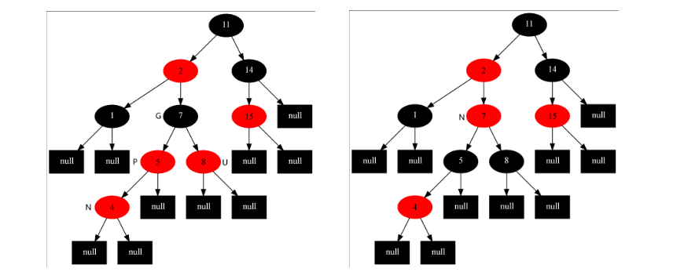
对于第二种情况：插入节点的父节点为红色，父节点的兄弟节点为黑色，且插入节点为父节点的右孩子。
将当前节点指向其父亲节点，以父亲节点进行 左旋。如下图所示：
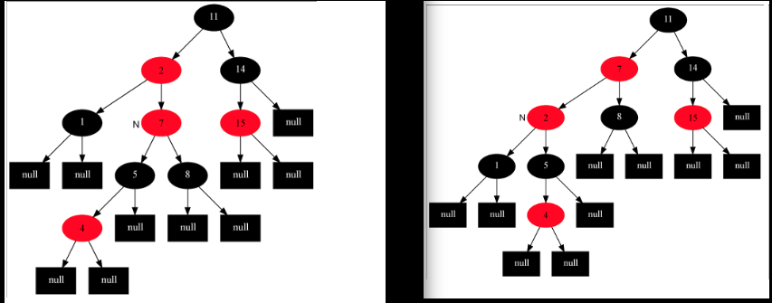
对于第三种情况：插入节点的父节点为红色，父节点的兄弟节点为黑色，且插入节点为父节点的左孩子。
将父节点涂黑，祖父节点涂红，当前节点指向其 祖父节点，以 祖父节点 进行 右旋，并将根结点颜色涂黑。如下图所示：
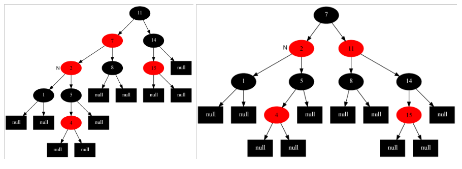
修正过程始终会走到情况三！步骤可以简单的记为： 变色->左旋->右旋。
template<typename T>
void RBTree<T>::insert(Tchild key) {
Node<T> *z = nullptr;
if ((z = new Node<T>(RED, key, nullptr, nullptr, nullptr)) == nullptr)
return;
this->insert(z);
}
template<typename T>
void RBTree<T>::insert(Node<T> *node) {
Node<T> *y = nullptr;
Node<T> *x = this->m_root;
// 找到插入父节点
while (x != nullptr) {
y = x;
if (node->key > y->key)
x = x->rightChild;
else
x = x->leftChild;
}
node->parent = y;
// 插入
if (y == nullptr)
this->m_root = node;
else {
if (node->key < y->key)
y->leftChild = node;
else
y->rightChild = node;
}
node->color = RED;
// 修正
this->insertFixUp(node);
}
template<typename T>
void RBTree<T>::insertFixUp(Node<T> *node) {
Node<T> *parent, *grandparent;
while ((parent = node->parent) != nullptr && parent->isred()) {
grandparent = node->grandParent(); // 这里不可能出现祖父节点为空的情况，因为根结点一定为黑色，所以如果父节点为根节点会跳出循环
if (parent == grandparent->leftChild) { // 父节点是祖父节点的左孩子的情况
Node<T> *uncle = grandparent->rightChild;
// case1: 父节点和叔父节点都为红色
if (uncle != nullptr && uncle->isred()) { // 叔父节点不为空，并且叔父节点为红色
parent->setblack(); // 将父节点设置为黑色
uncle->setblack(); // 叔父节点也设置为黑色
grandparent->setred(); // 祖父节点设置为红色
node = grandparent; // 当前节点指向祖父节点
continue;
}
// case2: 叔父节点为黑色，并且当前节点为右孩子
if (node == parent->rightChild) {
this->leftRotate(parent); // 以父节点为中心进行左旋
Node<T> *tmp = parent; // 交换当前节点和父节点，为下一步做准备
parent = node;
node = tmp;
}
// case3: 叔父节点为黑色，并且当前节点为左孩子
parent->setblack(); // 将父节点设置为黑色
grandparent->setred(); // 祖父节点设置为红色
this->rightRotate(grandparent); // 以祖父节点为中心进行右旋
} else { // 父节点是祖父节点的右孩子的情况
Node<T> *uncle = grandparent->leftChild;
// case1: 父节点和叔父节点都为红色
if (uncle != nullptr && uncle->isred()) { // 叔父节点不为空，并且叔父节点为红色
parent->setblack(); // 将父节点设置为黑色
uncle->setblack(); // 叔父节点也设置为黑色
grandparent->setred(); // 祖父节点设置为红色
node = grandparent; // 当前节点指向祖父节点
continue;
}
// case2: 叔父节点为黑色，并且当前节点为左孩子
if (node == parent->leftChild) {
this->rightRotate(parent); // 以父节点为中心进行右旋
Node<T> *tmp = parent; // 交换当前节点和父节点，为下一步做准备
parent = node;
node = tmp;
}
// case3: 叔父节点为黑色，并且当前节点为右孩子
parent->setblack(); // 将父节点设置为黑色
grandparent->setred(); // 祖父节点设置为红色
this->leftRotate(grandparent); // 以祖父节点为中心进行左旋
}
}
this->m_root->setblack();
}删除
在插入时，我们需要考虑的是 插入节点及其父亲节点都为红色，即 双红 的情况。在删除时，我们需要考虑的是 删除节点及其父节点都为黑色，即 双黑 的情况。
如果是 删除节点有两个孩子，并且孩子节点不为叶子节点 的情况，可以通过 先序遍历 的方式寻找其 前驱或者后继节点(叶子节点) 进行替换。
假设要删除的节点为 N，根据 先序遍历的结果：
A < N < B。那么可以用 B 也就是整个树中 大于N的最小的节点 对 N 进行替换，将 节点B 中的key与 N 中的key进行互换，然后删除 节点B。此时，只需要思考删除 节点B 所面临的不符合规则的问题。由于 节点B 是 节点N 的 后继节点，所以 节点B 最多只有一个子节点！！这样就将问题从 两个孩子变为一个孩子。
删除的步骤如下：
- 被删除节点没有子节点 - 直接删除，此时，由于没有子节点，所以以该节点为叶结点的树就不存在了，不会违背红黑树的规则。
- 被删除节点有一个孩子节点 - 用它的孩子节点对它进行替换，删除孩子节点，然后根据孩子节点的颜色进行修正。
- 被删除的节点有两个孩子 - 找到被删除节点的 后继节点，使用后继节点的key替换被删除节点的key。删除 后继节点，由于 后继节点最多只有一个孩子节点，问题就转换成了上面的两种情况。
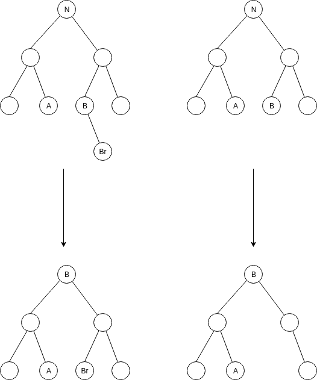
删除后的修正
和插入的情况一样，删除完节点后，可能会出现违背 红黑树特性 的问题，这时候需要对红黑树进行修正。由于在删除的时候，已经将双孩子节点的情况转变为 最多只有一个孩子节点 的情况，所有需要修正的情况只需考虑 最多只有一个孩子节点。
删除后的修正比插入后的修正要复杂很多，分为以下一些情况需要考虑。当然，现在只需要考虑 被删除节点的子节点最多有一个孩子 的情况。
在做删除后的修正之前，先假设真正要删除的节点为 X，被代替删除的节点为 N， X 的父节点为 P，兄弟节点为 S，兄弟节点的孩子节点分别为 Sl、 Sr。
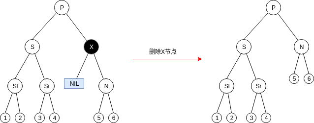
注意：以下情况都是在 X 为黑色，最多有一个孩子，并且 N 为 X 的后继节点的情况下讨论的。
情况一：N 为新的根结点
即 X 为根结点，此时整棵树只有一条分支，所以直接替换即可。
情况二：S 为红色，其他节点为黑色
以 P 为中心右旋，并交换 S 和 P 的颜色。此时，由于 X 为黑色，所以 S -> P -> N 这条路径上的黑阶较另外几条路径上的黑阶要少一个，整棵树并不平衡。接下来就变成了 情况四、情况五、情况六 了。
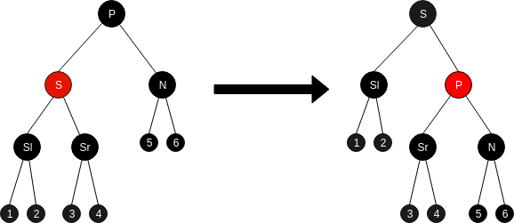
情况三：所有节点都为黑色
将 S 涂成红色，此时以 P 为根的子树处于平衡状态，但是由于 黑阶 减少了一个，所以通过 P 的路径上的 黑阶都减少了。需要将 N 指向 P，以 P 为对象从 情况一 开始进行删除后的修正。
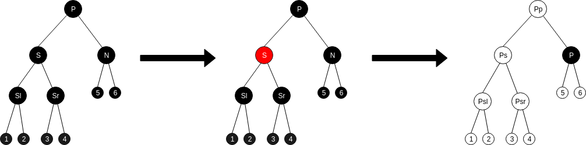
情况四：P 为红色，其他节点为黑色
将 P 和 S 的颜色互换，此时 P -> S -> Sl(Sr) 的路径上的 黑阶不变， P -> N 路径上的 黑阶增加一，通过 P 的路径上的 黑阶并没有改变，整棵树达到平衡状态，结束。
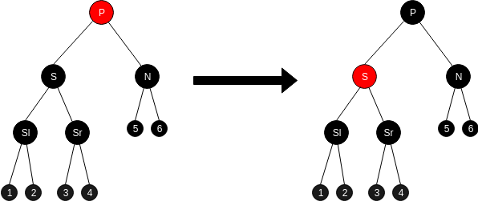
情况五：Sr 为红色，P可黑可红，其他节点为黑色
以 S 为中心进行左旋，并交换 S 和 Sr 的颜色。由于之前通过 P -> S 的子树已经是平衡的了，此时通过 P -> Sr 的子树也是平衡的。接下来进行 情况六 的分析。
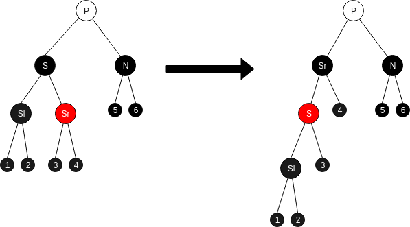
情况六：Sl 为红色，P可黑可红，其他节点为黑色
我们用 情况五 的结果来进行考虑。首先要了解的是，节点1、2、5、6的黑阶相同，节点3、4的黑阶要比前面四个节点的黑阶多一，黑阶的数量与节点 Sl 和 N 相同！
假设情况五变换前，S 的黑阶为 Lps，那么 Sr的黑阶为 Lps，N 和 Sl 的黑阶为 Lps - 1，节点3、4的黑阶为 Lps - 1，节点1、2、5、6的黑阶为 Lps - 2。
以 P 为中心进行右旋，并将 S 涂黑。
经过上述的转换，在新的子树中， S 和 P 的黑阶为 Lps，达到平衡，结束。
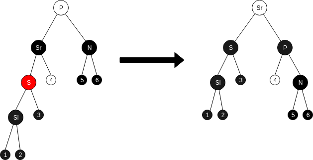
删除修正总结
删除修正部分，分析起来确实有点头晕，需要静下心来。最后将各个情况串起来，会好很多。
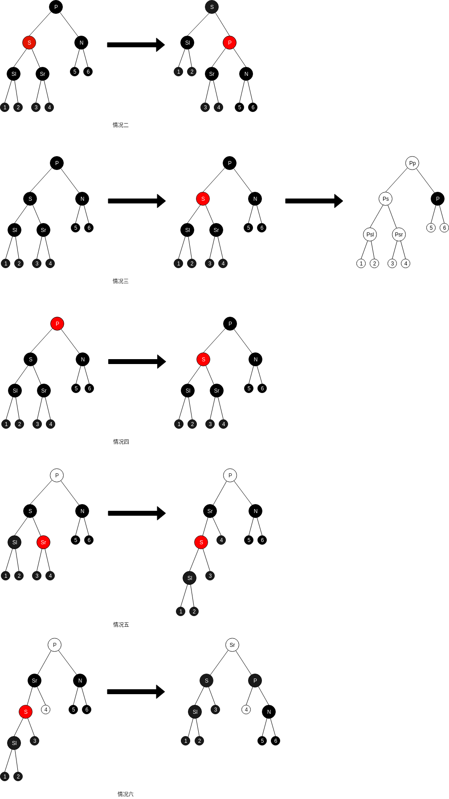
参考
- 在线生成红黑树
- 红黑树(四)之 C++的实现(代码不太简洁)
- 【数据结构和算法05】 红-黑树 (删除部分缺失)
- 红黑树的C++完整实现源码
- 红黑树wiki
- 红黑树(一)之 原理和算法详细介绍
- 数据结构可视化